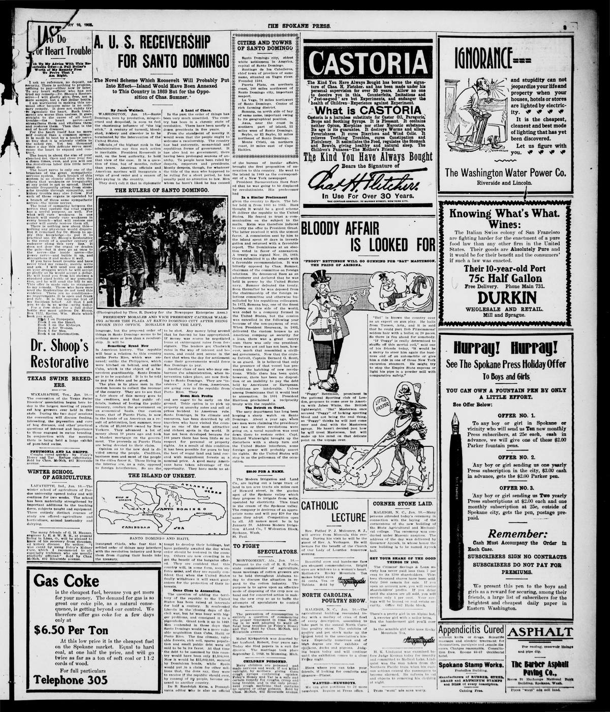

U. S. Receivership for Santo DomingoReceptoría de los EE. UU. para Santo Domingo
The Spokane Press. Spokane, Wash., January 10, 1905. Page 3. Published by Press Pub. Co. A daily newspaper, 1902–1939.The Spokane Press. Spokane, Wash., 10 de enero de 1905. Página 3. Publicado por Press Pub. Co. Periódico diario, 1902–1939. View the originalVer el original

The Spokane Press reviewed the history of United States annexation attempts in the Dominican Republic, focusing on President Buenaventura Báez's 1869 pact with President Grant. The treaty failed in the Senate after Senator Charles Sumner denounced Báez as a corrupt despot maintained in power solely by American naval force. The article also noted the short-lived 1872 lease of Samana Bay and President Heureaux's subsequent transfer of national custom houses to an American syndicate in 1893.El Spokane Press repasó la historia de los intentos de anexión de los Estados Unidos en la República Dominicana, centrándose en el pacto de 1869 entre el presidente Buenaventura Báez y el presidente Grant. El tratado fracasó en el Senado después de que el senador Charles Sumner denunciara a Báez como un déspota corrupto sostenido en el poder únicamente por la fuerza naval estadounidense. El artículo también destacó el efímero arrendamiento de la bahía de Samaná en 1872 y la posterior transferencia de las aduanas nacionales que hizo el presidente Heureaux a un sindicato estadounidense en 1893.
FULL TEXT:TEXTO COMPLETO:
U. S. RECEIVERSHIP FOR SANTO DOMINGORECEPTORÍA DE LOS ESTADOS UNIDOS PARA SANTO DOMINGO
The Novel Scheme Which Roosevelt Will Probably Put Into Effect—Island Would Have Been Annexed to This Country in 1869 But for the Opposition of Chas. Sumner.El novedoso plan que Roosevelt probablemente pondrá en efecto—La isla habría sido anexada a este país en 1869 de no ser por la oposición de Chas. Sumner.
By Jacob Waldeck.Por Jacob Waldeck.
WASHINGTON, Jan. 10.—Santo Domingo, torn by revolution, misgoverned and despoiled, is soon to feel the chastening influence of "the big stick." A century of turmoil, bloodshed, robbery and disorder is to be terminated by the intervention of the United States.WASHINGTON, 10 de enero.—Santo Domingo, desgarrado por la revolución, mal gobernado y despojado, pronto sentirá la influencia castigadora de «el gran garrote». Un siglo de tumulto, derramamiento de sangre, robo y desorden ha de ser terminado por la intervención de los Estados Unidos.
Officials of the highest rank in the administration say that such action is inevitable. President Roosevelt is said, on the best authority, to hold that view of the case. It is a question of time, but of months, rather than years. American officials and American marines will inaugurate a reign of good order and a season of debt-paying in the country.Oficiales del más alto rango en la administración dicen que tal acción es inevitable. Se dice, con la mejor autoridad, que el presidente Roosevelt sostiene esa opinión del caso. Es una cuestión de tiempo, pero de meses, más que de años. Oficiales estadounidenses e infantes de marina estadounidenses inaugurarán un reinado de buen orden y una temporada de pago de deudas en el país.
They don't call it that in diplomatic language, but the proposed order of things in Santo Domingo seems to be nothing more or less than a receivership. It will beNo lo llaman así en lenguaje diplomático, pero el orden de cosas propuesto en Santo Domingo parece ser nada más ni menos que una receptoría. Será
Something Brand NewAlgo completamente nuevo
in American history. The republic will bear a relation to this country unlike Porto Rico, which was annexed; unlike the Philippines, which were hitched on behind, and unlike Cuba, which is the object of a benevolent guardianship. Santo Domingo is to be regulated. It is to be told to pay its debts and be good.en la historia estadounidense. La república tendrá una relación con este país diferente a Puerto Rico, que fue anexado; diferente a las Filipinas, que fueron enganchadas detrás, y diferente a Cuba, que es el objeto de una tutela benevolente. Santo Domingo ha de ser regulado. Se le ha de decir que pague sus deudas y sea bueno.
The plan is to place men in the custom houses to collect the revenue of the country. They are to see that a fair share of this money goes to the creditors, and that public officials, instead of looting the public treasury, conduct the government on an economical basis. One custom house, that of Puerto Plata, is now in the hands of an American as a result of arbitration, last summer, over a claim of $5,000,000 owned by New Yorkers. They advanced a lot of money about 10 years ago and took a blanket mortgage on the government. The proceeds at Puerto Plata are being devoted to their claim.El plan es colocar hombres en las aduanas para colectar las rentas del país. Han de ver que una parte justa de este dinero vaya a los acreedores, y que los oficiales públicos, en lugar de saquear el tesoro público, conduzcan el gobierno sobre una base económica. Una aduana, la de Puerto Plata, está ahora en manos de un estadounidense como resultado de un arbitraje, el verano pasado, sobre una reclamación de $5,000,000 propiedad de neoyorquinos. Avanzaron mucho dinero hace unos 10 años y tomaron una hipoteca general sobre el gobierno. Los ingresos en Puerto Plata están siendo dedicados a su reclamación.
Opinion as to the new deal is divided among the people. Creditors, business men and most of the people of the cities favor it. Those living in the interior are, as a rule, opposed to foreign interference. So are the insurgent chiefs, who fear that a settled order of things may interfere with the revolution industry and keep them from digging their hands into the treasury.La opinión en cuanto al nuevo trato está dividida entre el pueblo. Acreedores, hombres de negocios y la mayoría del pueblo de las ciudades lo favorecen. Los que viven en el interior están, por regla, opuestos a la interferencia extranjera. También lo están los jefes insurgentes, que temen que un orden establecido de cosas pueda interferir con la industria de la revolución y les impida meter las manos en el tesoro.
A Land of Chaos.Una tierra de caos.
In the past the order of things has been very much unsettled. The country has been in a chronic state of revolution. There have been nearly a dozen presidents in five years.En el pasado el orden de cosas ha sido muy inestable. El país ha estado en un estado crónico de revolución. Ha habido casi una docena de presidentes en cinco años.
From the standpoint of novelty it would seem that the people ought to welcome a receivership. The country has had autocratic, monarchial and republican forms of government. It has also had no government; there having been prolonged seasons of anarchy. Te people have been ruled by despots, emperors and presidents. Mostly despots, though, for whatever the title of the man who happened to be ruling for a short period, he has usually paid no attention to law. Men whom he hasn't liked he has caused to be shot. Any money lying around that he fancied he has appropriated. If money was scarce he negotiated loans at extravagant rates from foreigners. The lenders got Chadwick rates in the way of interest and bonuses, and could rest serene in the fact that when the day for settlement came their governments would force San Domingo to pay.Desde el punto de vista de la novedad parecería que el pueblo debería dar la bienvenida a una receptoría. El país ha tenido formas de gobierno autocráticas, monárquicas y republicanas. También ha tenido ningún gobierno; habiendo habido temporadas prolongadas de anarquía. El pueblo ha sido gobernado por déspotas, emperadores y presidentes. Mayormente déspotas, sin embargo, pues cualquiera que fuera el título del hombre que estuviera gobernando por un período corto, usualmente no ha prestado atención a la ley. A los hombres que no le han gustado los ha hecho fusilar. Cualquier dinero que estuviera por ahí que le apeteciera lo ha apropiado. Si el dinero era escaso negociaba préstamos a tasas extravagantes de extranjeros. Los prestamistas obtenían tasas Chadwick en el modo de interés y bonos, y podían descansar serenos en el hecho de que cuando llegara el día del arreglo sus gobiernos obligarían a Santo Domingo a pagar.
Another class of men who may embarrass the administration, when intervention takes place, are now flocking to Santo Domingo. They are "investors." A lot of them, Americans, are going over to the republic from Porto Rico. TheyOtra clase de hombres que pueden avergonzar a la administración, cuando tenga lugar la intervención, ahora están acudiendo en tropel a Santo Domingo. Son «inversionistas». Muchos de ellos, estadounidenses, están yendo a la república desde Puerto Rico. Ellos
Scent Rich ProfitsPerciben ricas ganancias
and are eager to be early on the ground. Tehir option is to pick up property at anarchy rates and sell at prices incident to American rule. Santo Domingo, in its climate and resources, has been described by all travelers who have visited the country as one of the most attractive and richest spots in the world. It has not been developed because for 100 years there has been little or no respect for personal or property rights. As a result of this condition it has been possible for years to buy the best of sugar land and land covered with magnificent forests at a nominal price. A good many Americans have taken advantage of the opportunity. They have made no attempt to develop their holdings, but have patiently awaited the day when order should be restored in the country. Others are now crowding in to get the benefit of the bargains offered. They are confident that this country will, in some form, soon enforce order, and they are equally confident that when the United States finally withdraws it will exact guarantees for the protection of their interests.y están ansiosos de estar temprano en el terreno. Su opción es recoger propiedad a precios de anarquía y vender a precios incidentales al gobierno estadounidense. Santo Domingo, en su clima y recursos, ha sido descrito por todos los viajeros que han visitado el país como uno de los lugares más atractivos y ricos del mundo. No ha sido desarrollado porque por 100 años ha habido poco o ningún respeto por los derechos personales o de propiedad. Como resultado de esta condición ha sido posible por años comprar la mejor tierra azucarera y tierra cubierta con magníficos bosques a un precio nominal. Bastantes estadounidenses han aprovechado la oportunidad. No han hecho intento de desarrollar sus posesiones, sino que han esperado pacientemente el día en que el orden fuera restaurado en el país. Otros ahora están entrando en tropel para obtener el beneficio de las gangas ofrecidas. Están confiados de que este país, en alguna forma, pronto hará cumplir el orden, y están igualmente confiados de que cuando los Estados Unidos finalmente se retiren exigirá garantías para la protección de sus intereses.
Came Close to Annexation.Estuvo cerca de la anexión.
The question of adding the territory of the republic to the United States has been raised at intervals for half a century. It confronted Lincoln in the closing days of the civil war, but he was busy with bigger problems, and consigned it to a pigeonhole. Grant took it up in 1869. Men contended in those days that Santo Domingo would be a more valuable acquisition than Cuba, Haiti or Porto Rico. The fine climate, valuable forests, rich soil, sparse population and small public debt were all said to be in its favor. At that time the debt to be assumed by this country would have been only $1,500,000. Now it would be $32,000,000, secured by Dominican bonds, while Spain would put in a claim for other millions that, the dons say, they were to receive if the republic should ever, by consent of its people, become annexed to another country.La cuestión de añadir el territorio de la república a los Estados Unidos ha sido planteada a intervalos por medio siglo. Confrontó a Lincoln en los días finales de la guerra civil, pero estaba ocupado con problemas más grandes, y la consignó a un casillero. Grant la tomó en 1869. Los hombres contendían en esos días que Santo Domingo sería una adquisición más valiosa que Cuba, Haití o Puerto Rico. El clima fino, bosques valiosos, suelo rico, población escasa y pequeña deuda pública se decían todos en su favor. En ese momento la deuda a ser asumida por este país habría sido solo $1,500,000. Ahora sería $32,000,000, asegurada por bonos dominicanos, mientras España pondría una reclamación por otros millones que, dicen los dones, habían de recibir si la república alguna vez, por consentimiento de su pueblo, se anexara a otro país.
De B. Randolph Keim, a Pennsylvania editor who is also an official of the bureau of insular affairs, brought the first proposition of annexation to this country. He went to the island in 1869 as the correspondent of a New York newspaper.De B. Randolph Keim, un editor de Pensilvania que es también un oficial de la oficina de asuntos insulares, trajo la primera proposición de anexión a este país. Fue a la isla en 1869 como el corresponsal de un periódico de Nueva York.
President Buenaventura Baez feared that he was going to be displaced by revolutionists. His predecessor hadEl presidente Buenaventura Báez temía que iba a ser desplazado por revolucionistas. Su predecesor había
In a Similar PredicamentEn una situación similar
given the country to Spain. The latter held it from 1861 to 1865. Baez thought it would be a good scheme to deliver the republic to the United States. He feared to trust a communication on the subject to the mails. Keim was therefore induced to carry the offer to President Grant. The latter received it with the utmost favor. A commission sent by him to the island spent 40 days in investigation and returned with a favorable report. The Dominicans at an election voted in favor of annexation. A treaty was signed Nov. 29, 1869. Grant submitted it to the senate with a favorable recommendation. It was bitterly opposed by Chas. Sumner, chairman of the committee on foreign relations. He denounced Baez as an adventurer and declared that he was held in power by the United States navy. Sumner defeated the treaty. Soon thereafter he was deposed from the chairmanship of the foreign relations committee and otherwise humiliated by his republican colleagues. In 1872, Samana bay, one of the finest harbors on this side of the world, was ceded to a company formed in the United States, but the cession was cancelled in the following year because of the non-payment of rent. When President Heureaux, in 1893, delivered the custom houses to an American company as security for a loan, there was a great outcry soon there was only one president. There was not and has not been, however, much that resembled a civilized governmetn. Now that the cruiser Detroit, Captain Bernard G. Scott, is on guard. It is believed that only the presence of that vessel has prevented the hatching of new revolutions. While there has been quiet, however, there has been no disposition or an inability to pay the debt held by Americans or Europeans. Conditions are intolerable. Unless among Dominicans that it would lead to annexation. In 1891 President Harrison proclaimed a reciprocity treaty with the republie.dado el país a España. Esta última lo tuvo de 1861 a 1865. Báez pensó que sería un buen plan entregar la república a los Estados Unidos. Temía confiar una comunicación sobre el tema a los correos. Keim fue por tanto inducido a llevar la oferta al presidente Grant. Este último la recibió con el mayor favor. Una comisión enviada por él a la isla pasó 40 días en investigación y regresó con un informe favorable. Los dominicanos en una elección votaron a favor de la anexión. Un tratado fue firmado el 29 de noviembre de 1869. Grant lo sometió al senado con una recomendación favorable. Fue amargamente opuesto por Chas. Sumner, presidente del comité de relaciones exteriores. Denunció a Báez como un aventurero y declaró que era mantenido en el poder por la marina de los Estados Unidos. Sumner derrotó el tratado. Poco después fue depuesto de la presidencia del comité de relaciones exteriores y humillado de otro modo por sus colegas republicanos. En 1872, la bahía de Samaná, uno de los puertos más finos de este lado del mundo, fue cedida a una compañía formada en los Estados Unidos, pero la cesión fue cancelada al año siguiente a causa del no pago de la renta. Cuando el presidente Heureaux, en 1893, entregó las aduanas a una compañía estadounidense como seguridad por un préstamo, hubo un gran clamor pronto solo hubo un presidente. No hubo ni ha habido, sin embargo, mucho que se pareciera a un gobierno civilizado. Ahora que el crucero Detroit, capitán Bernard G. Scott, está en guardia. Se cree que solo la presencia de ese buque ha prevenido la incubación de nuevas revoluciones. Mientras ha habido quietud, sin embargo, no ha habido disposición o una incapacidad para pagar la deuda tenida por estadounidenses o europeos. Las condiciones son intolerables. A menos que entre los dominicanos que ello conduciría a la anexión. En 1891 el presidente Harrison proclamó un tratado de reciprocidad con la república.
The Detroit on Guard.El Detroit en guardia.
The navy department has long been keeping a sharp watch on Santo Domingo. About a year ago, when two men were claiming the presidency and two or three revolutions were going on, a naval squadron was sent down there to restore order. Capt. Richard Wainwright brought up the disturbers with a sharp turn and the United States interferes, some foreign power will probably assert its rights. So the United States will step in as the policeman of the occacation.El departamento de marina ha estado por mucho tiempo manteniendo una aguda vigilancia sobre Santo Domingo. Hace cerca de un año, cuando dos hombres reclamaban la presidencia y dos o tres revoluciones estaban ocurriendo, una escuadra naval fue enviada allá para restaurar el orden. El capitán Richard Wainwright trajo a los perturbadores con una vuelta aguda y los Estados Unidos interfieren, alguna potencia extranjera probablemente afirmará sus derechos. Así que los Estados Unidos entrarán como el policía de la ocasión.